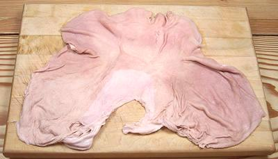

Pig Stomach

[Pork Maw, Pork Tripe, Pork Bag]
Recipes that call for tripe generally presume Beef Tripe, except in China
and parts of Southeast Asia were Pork Stomach would be presumed.
In Pennsylvania (U.S.) and Louisiana (U.S.) pork stomachs are often
stuffed so they can be found whole relatively easily, but in Southern
California's Asian markets they are generally cut open as shown in the
photo because cleaning is easier that way. Asians cut them into strips
anyway so they aren't needed whole. The photo specimen weighed 1 pound
and was purchased from a Filipino market where they are packaged two to
a tray.
In Italy pork stomachs are stuffed to make a type of sausage and
stuffed stomachs appear in Central and Eastern European cuisines and in
other ethnic cuisines worldwide (except in Israel and Islamic regions,
of course).
More on Cuts of Pork.
Pork Stomach can be a bit smelly if not well cleaned at the factory,
and if it is, keep it off your cutting board and other absorbent surfaces
until it's been well washed.
Yield:
you will end up with about 1/2 the weight you
started with and the meat will be thicker. Recipes should list the
"as purchased" weight unless specifically stated otherwise.
Procedure:
for split stomach
This procedure presumes the stomach has been split and commercially
cleaned before you bought it.
- Cut away any fat deposits on the inside side.
- Soak submerged in water with some citric acid or lemon juice and a
teaspoon of salt added. Slosh around now and then for 15 minutes or more,
then pour out and rinse and wipe well.
- Put the stomach in a pot with water to cover well, add some citric
acid or lemon juice and a teaspoon of salt. Bring to a boil and simmer
for 10 minutes, then pour out, rinse and wipe well.
- Repeat the above step with fresh water, salt and acid.
- Clean pot as needed. Rinse the stomach and return to the pot. Cover
with fresh cold water and bring to a boil. Add some Scallions and a
few slices of Ginger Root. Simmer until tender but still "al dente",
especially if there will be much more cooking in the recipe. This
will be about 1 hour. It will still be a bit chewy, but that's its
nature. If you cook it much longer, the outer and inner layers will
separate, the layer between will disintegrate, and it will be messy.
- Rinse the stomach which you will find has shrunk and thickened, now
weighing about half what it did before. Cut it into the size pieces
required for thee recipe.
Procedure:
for whole stomach
This procedure presumes you will stuff the stomach and that it hasn't
been thoroughly cleaned commercially, inside and out, before you bought
it.
- Rinse the stomach thoroughly and turn it inside out through one of
its openings.
- Soak submerged in water with some citric acid or lemon juice and a
teaspoon of salt added. Slosh around now and then for 20 minutes or more,
then pour out and rinse.
- Repeat step 2 at least once.
- With the backside of your kitchen knife (presuming it has sharp edges),
scrape the stomach all over until all gooey stuff is scraped off. Rinse
thoroughly.
- Repeat step 2 twice more or until the stomach is no longer smelly.
- Turn the stomach right side out and rinse again. It should be ready to
stuff now.
ap_stomz 091026 - www.clovegarden.com
©Andrew Grygus - agryg@clovegaden.com - Photos on this
page not otherwise credited are © cg1 -
Linking to and non-commercial use of this page permitted